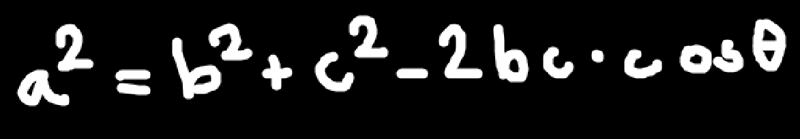
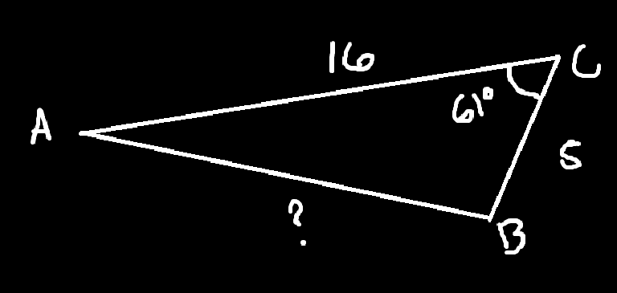
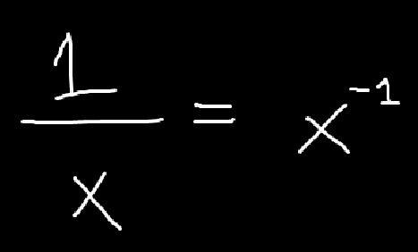
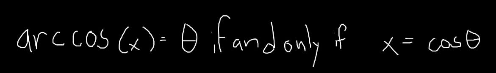
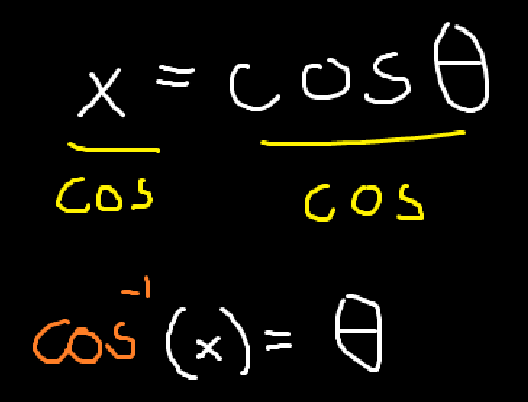
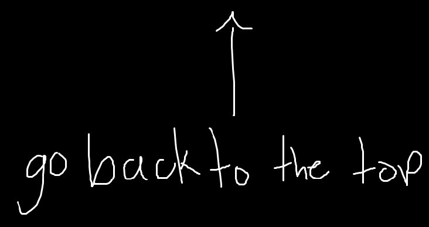

Law of Cosines - Geometry & Trigonometry


These basically just help solve for sides (or angles) of a triangle. I think that the law of cosine or formula of cosine states that:

Video, for more info.
So how would you use this to solve for a side of a triangle?
Let say that the triangle (Courtesy of Khan Academy) is:

Solve for side AB, round to the nearest tenth.
So, using the formula of cosine, we can then substitute the following sides.
With a2 = The missing side/AB
b2 =Either BC or CA
c2 =Either CA or BC
θ = m < c (Or, the measurement of angle C.)
With that in mind, we can then substitute.
a2= b2+c2− 2bc cosθ
(theta/θ probably meaning one of the angles in a triangle)
And thus:

Therefore, AB ≈√ 203.43056
or ≈ 14.26290854 (14.3 If rounded to the nearest tenth)
So thats pretty cool, though kind of long, you get the jist of how this whole cosine thing works (unless you're below the age of 6)
(Btw, to get the cos of 61, you also require a scientific calculator, as it can't be solved by hand, or the computation is too hard)
How about solving for an angle of a triangle?
Lets say that the triangle then is:

The same triangle is used, but this time, the measurement for the angle B, is missing.
Though it uses the same formula as before, there are some minor adjustments to it.
As now, it states that:
c2= a2 + b2 − 2ab cosθ'
With:
c2= The side facing the missing angle/AC
a2= BC or AB
b2= AB or BC
Thus:

Then, you must transpose the following:

Therefore the measurement equals to cos-1(0.4781875)
or ≈ 61
(Which coincides with the previous triangle's measurement of angle C)
I'm not fully sure how they got the cos-1 but my theory (thats probably not true) is that:
Considering that:

Then this would mean that:

As the formula for arccos/cos-1 would state that:

Meaning that if this were true, it would be because:

(Note: This may correlate with the sines tab)
So yeah, thats probably how they got it, but i'm not entirely sure, anyhow, i'll update this once in a while.
